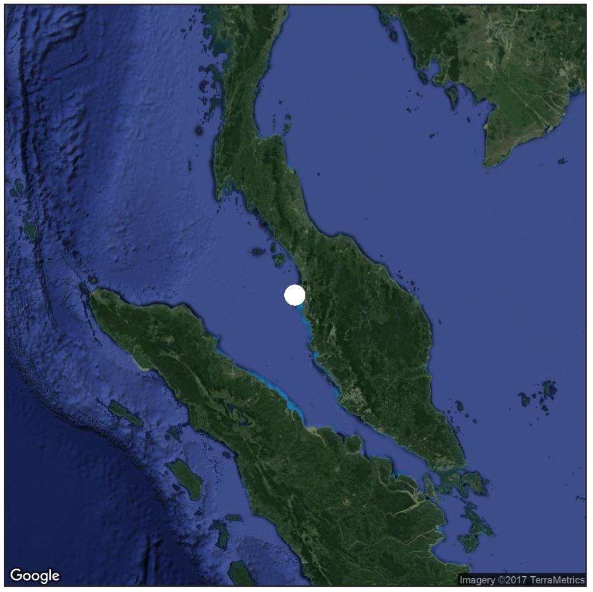
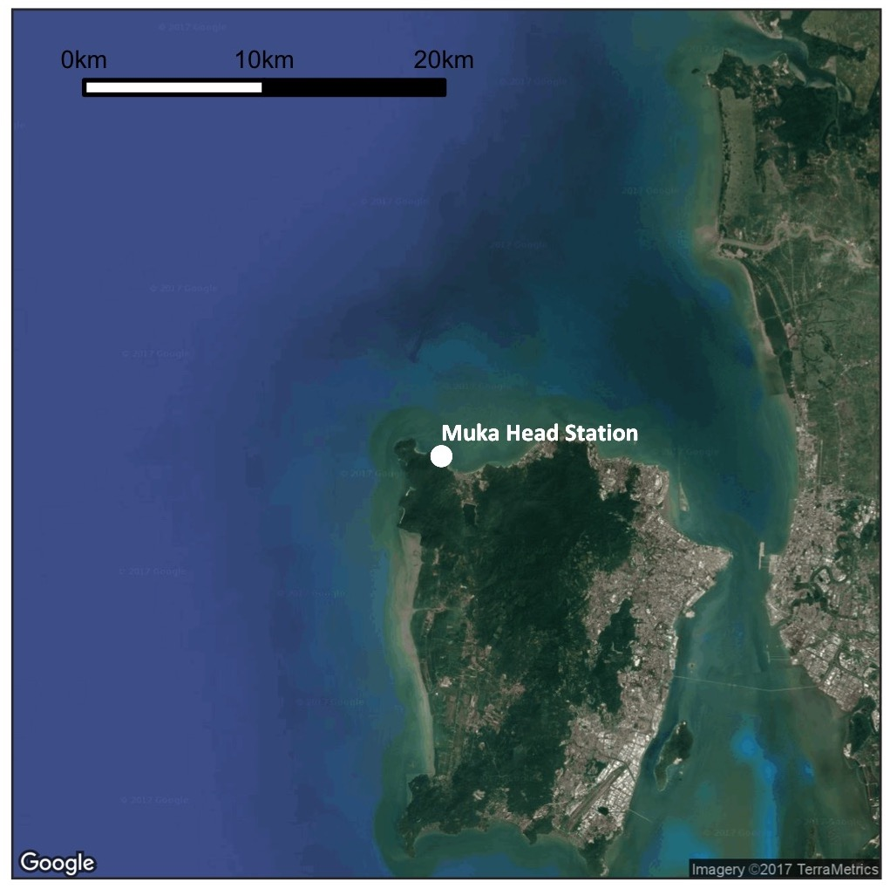
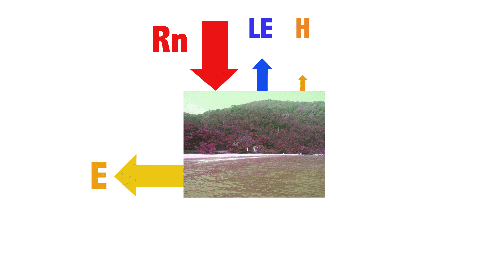
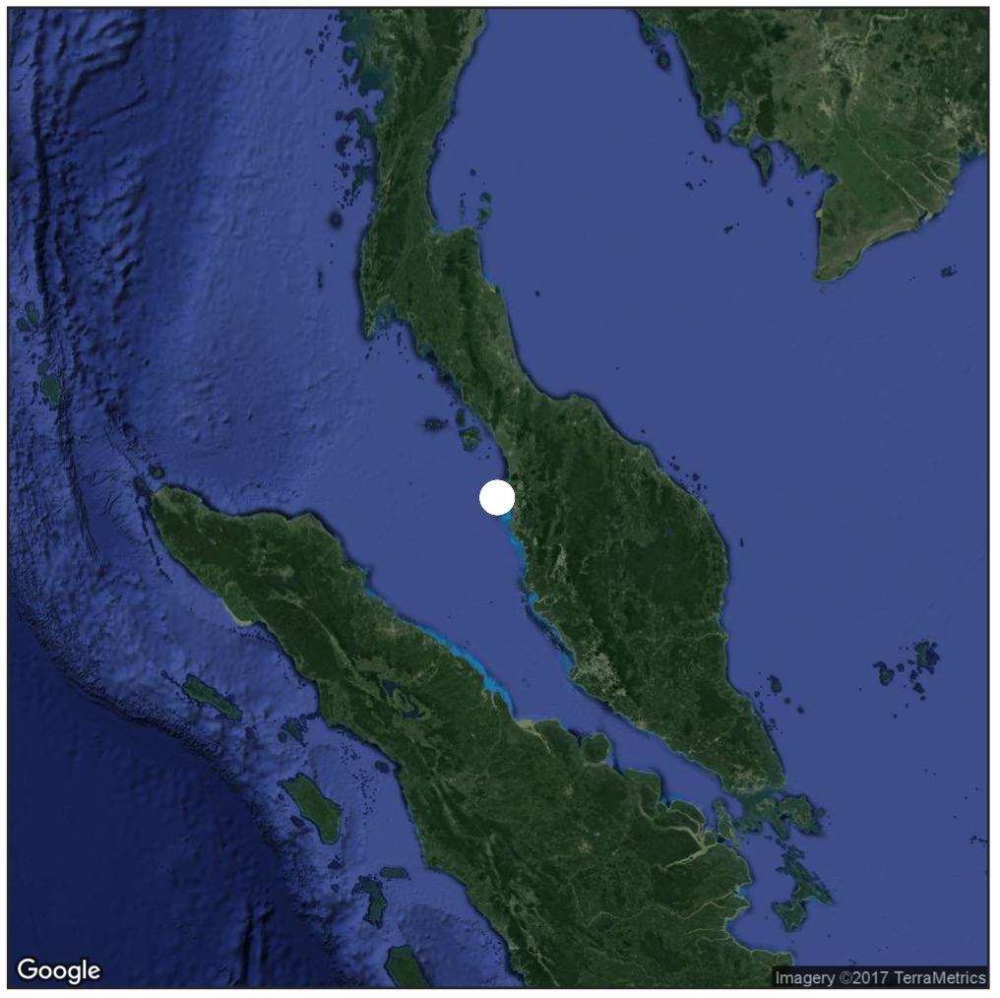
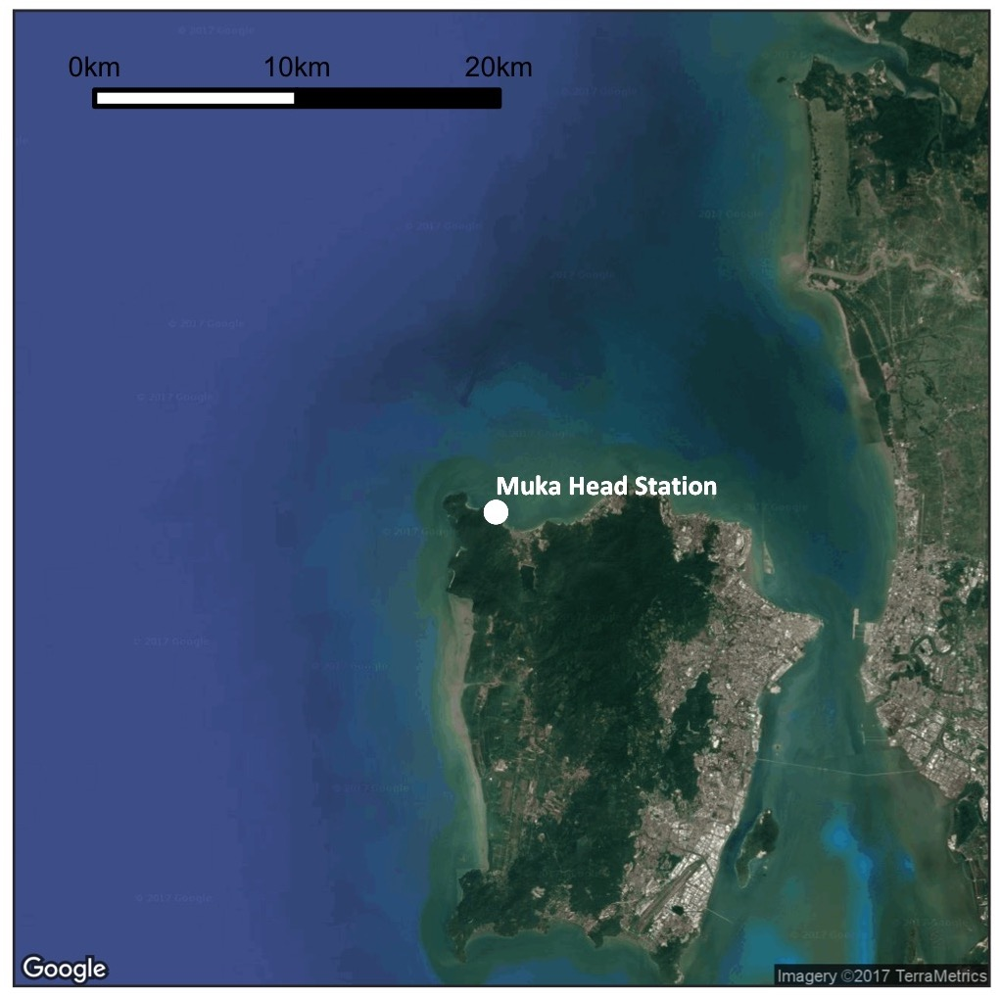
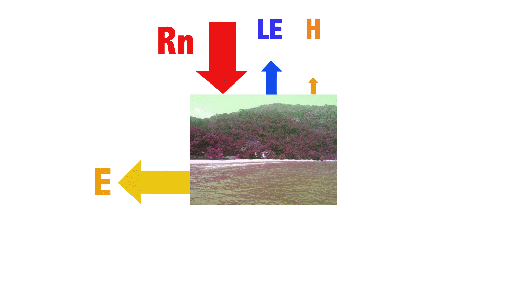

Home
 
This website showcases our ongoing research in atmosphere-land and atmosphere-sea interactions. We study the atmospheric exchanges above oil palm, sea, and freshwater bodies. We hope to continuously measure the fluxes for many years to come so that we may gain in-depth insights on the short-term and long-term atmospheric processes of these surfaces.
We explore these interactions using the "eddy covariance" method, a fast response open-path gas analyzer and anemometer system that is capable in measuring vertical movement, or "fluxes", of moisture and carbon dioxide. To supplement the flux data, we measure weather parameters, such as solar radiation, temperature, relative humidity and wind so that we get a better understanding of the feedbacks and responses of the exchanges and its drivers.

We provide updated plots of half-hourly 24-hour flux and weather data in the link in the navigation bar. Please contact us to inquire about our work or to request data by e-mail or by visiting Yusri Yusup's website.
For the CEMACS daily report of the previous day measurements, click here -> CEMACS DAILY REPORT
For the latest relevant satellite data, click here -> LATEST SATELLITE IMAGE
 
This website showcases our ongoing research in atmosphere-land and atmosphere-sea interactions. We study the atmospheric exchanges above oil palm, sea, and freshwater bodies. We hope to continuously measure the fluxes for many years to come so that we may gain in-depth insights on the short-term and long-term atmospheric processes of these surfaces.
We explore these interactions using the "eddy covariance" method, a fast response open-path gas analyzer and anemometer system that is capable in measuring vertical movement, or "fluxes", of moisture and carbon dioxide. To supplement the flux data, we measure weather parameters, such as solar radiation, temperature, relative humidity and wind so that we get a better understanding of the feedbacks and responses of the exchanges and its drivers.

Energy budget of the tropical coastal ocean, Rn is net radiation, LE is latent heat, H is sensible heat, and E is energy storage.
We provide updated plots of half-hourly 24-hour flux and weather data in the link in the navigation bar. Please contact us to inquire about our work or to request data by e-mail or by visiting Yusri Yusup's website.
For the CEMACS daily report of the previous day measurements, click here -> CEMACS DAILY REPORT
For the latest relevant satellite data, click here -> LATEST SATELLITE IMAGE